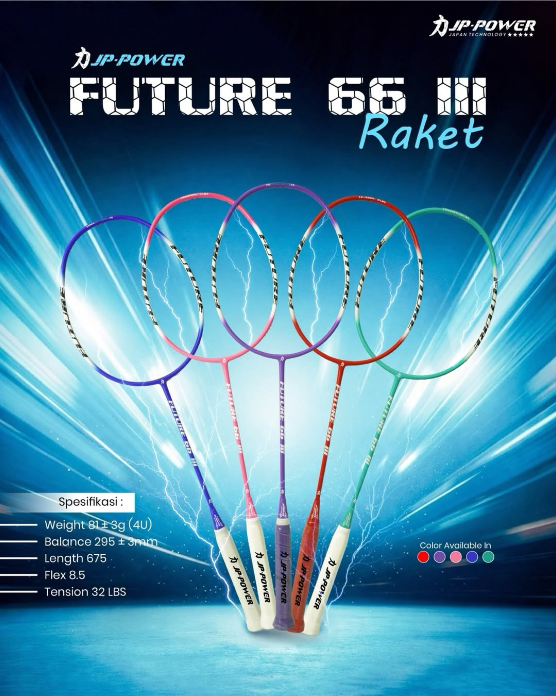
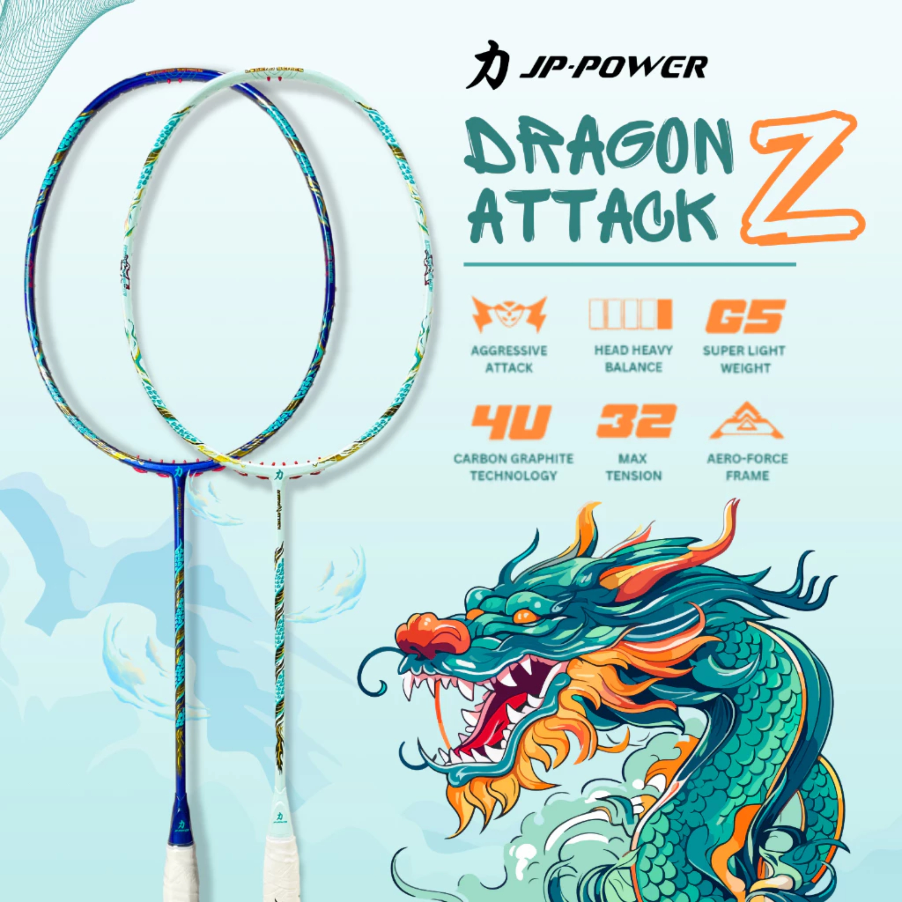

Membawa teknologi badminton Jepang ke Indonesia. Engineered untuk juara di setiap pertandingan, dari pemain rekreasional hingga atlet pro.


JP-POWER didirikan tahun 2014 dengan misi sederhana: membawa teknologi badminton kelas dunia ke setiap pemain Indonesia. Setiap raket di-engineer dengan standar Jepang — diuji frame, balance, tension, hingga durability.
Kini, JP-POWER telah dipercaya lebih dari 150.000 pemain di seluruh Indonesia, mulai dari pemula hingga atlet profesional. Filosofi kami sederhana: quality without compromise.
Quality control level Japan
Resmi setiap pembelian
Empat pilar teknologi yang membedakan setiap produk JP-POWER.
Frame berbahan high-modulus graphite untuk power eksplosif & durability maksimal.
Desain frame aerodinamis untuk high-speed swing & ultra control.
Smart tech integration untuk stabilitas maksimal & shot akurat.
Sistem boost di sweet spot untuk smash dengan max tension 32 LBS.
Dari workshop kecil di Tokyo hingga jadi brand pilihan ribuan pemain Indonesia.
JP-POWER didirikan di Tokyo dengan workshop kecil. Fokus utama: raket carbon woven berkualitas tinggi.
Membuka kantor regional di Jakarta. Future series jadi raket entry-level favorit pemain Indonesia.
Memperkenalkan sepatu badminton Hybrid Pro dengan anti-twist sole — terjual 50.000+ pasang dalam setahun.
Riset 3 tahun melahirkan Magnum X10 dengan Smart Tech Integration. Menang Best Badminton Innovation 2023.
Generasi baru raket all-round dengan frame baru. 68+ toko offline partner di seluruh Indonesia.
VISI: Menjadi brand badminton premium pilihan utama pemain Indonesia, dengan kualitas dan teknologi setara brand internasional.
MISI 1: Menghadirkan produk badminton berkualitas Japan technology dengan harga yang accessible untuk semua kalangan pemain.
MISI 2: Mendukung perkembangan badminton Indonesia melalui sponsorship klub, atlet muda, dan turnamen tingkat lokal.